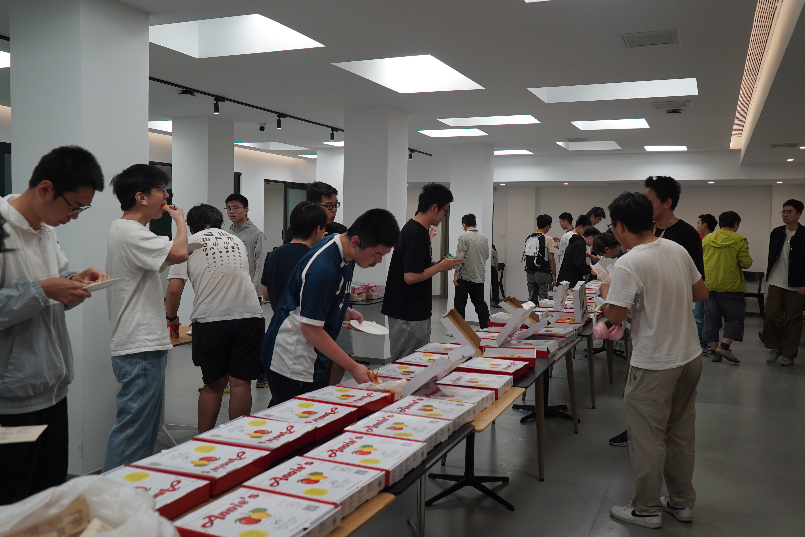

学术PIZZA沙龙
邀请各个方向的知名教授与学生进行深入交流，旨在增进本科生对该学科前沿的理解，创造教授与优秀本科生接触的机会。
最新举办时间：2024-05-01

邀请各个方向的知名教授与学生进行深入交流，旨在增进本科生对该学科前沿的理解，创造教授与优秀本科生接触的机会。


邀请学长学姐分享分系心得，编撰分系手册并举办讲座，旨在帮助同学们明晰分系的方向。


邀请著名教授讲授一小时左右的前沿内容，旨在帮助有志于学术的同学们增长见识，拓宽视野。
为了帮助初入燕园的同学们熟悉北京大学课程考试，增进学习动力，特举办模拟期中考试。
邀请大四本科生或博士生作为面试官，对进行四推面试的同学们进行模拟面试。旨在帮助大三同学熟悉四推面试的形式、流程以及问题。
向同学们征集优质的生活化数学问题，并征集解答。旨在激发同学们的灵感，增进对优质数学问题的探讨与交流。